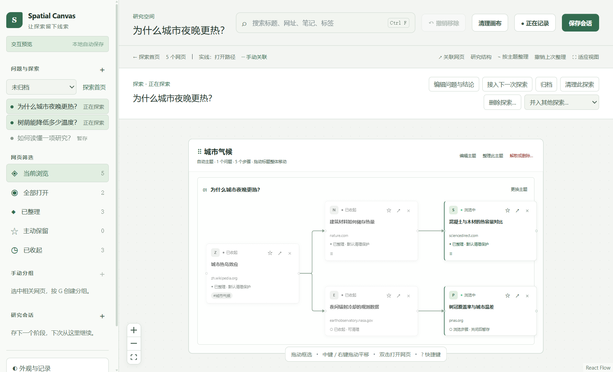

查资料时，你是不是也不敢关掉标签页，怕关掉以后就接不上了？
比如，你在比较两款相机。从评测点进样张，又从样张查到镜头，再打开几个价格页面。半小时后，浏览器里混着二十多个标签：哪些是在比较画质，哪些只是顺手看的？刚才从哪里岔开了？原来的问题查完了吗？
为了记住这些线索，你把网页一直留着。页面越积越多，找回上下文反而越费劲。隔天再打开，往往得重新看一遍，才能想起查到了哪里。
Spatial Canvas 是给经常这样查资料的人做的 Edge / Chrome 扩展。它自动把网页跳转记录成路径，让你看见每条线索从哪里来、在哪处分了支，关闭网页后也能沿着原路继续。
书签保存选中的网址，浏览历史帮助找回访问过的页面。这个工具着重保留页面之间的来路：同一标签页中的连续跳转会留下步骤，从某页打开的新标签会留下分支。你不必边查边建卡片、画连线。

允许记录后，照常浏览即可。迷路时打开画布，沿着路径回到分岔的页面；想暂时停下就关闭网页，步骤会置灰保留。下次从首页找到那次探索，再打开需要的页面。你也可以给探索写一个问题，给关键页面记下判断，减少下次重新阅读的时间。

暂时不用的网页可以关闭，不需要的记录可以清理。清理前能看到范围，并选择保护笔记、标签、分组和手动关联；删除后可以撤销。这样，结束一条岔路也有了明确的操作。
它适合需要反复比较来源的技术调研、选购和写作查资料。当前核心功能免费，使用不需要 AI。路径记录的是网页跳转，你对资料的判断可以留在笔记里。
0.11.0 预览版，尚未上架商店。支持桌面 Edge / Chrome；Safari / Firefox 暂无安装包。